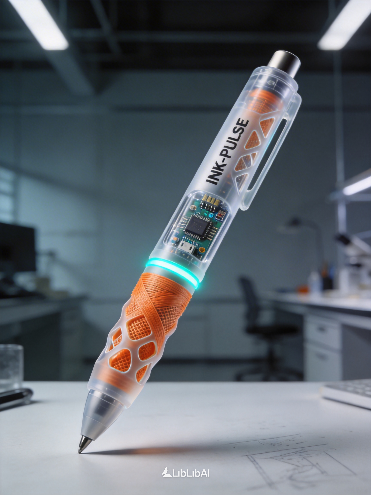

PROJECT 01
重走长征路
一个将历史叙事、互动关卡与 AI 反思结合的博物馆教育体验。
- 角色
- 主要负责人，与两名 K12 少年协作开发
- 方法
- Frontend · Express · Supabase · AI workflow
- 结果
- 校内短学期课程第一名 · 最佳团队奖
SCROLL TO EXPLORE ↓
01 / PROFILE
探索者，而不是标签
我是浙江大学 2025 级学生董卓然。兴趣驱动我从文化教育站点走到智能硬件原型，也让我持续接触新的模型与工具。
我关心大模型算法，也关心人如何驾驭 AI，而不是被工具牵着走。INFJ 是一种自我观察；“踏实做事”是我反复提醒自己的方法。
02 / SELECTED WORK
从文化教育、交互产品到智能硬件，项目是我理解技术边界的方式。
PROJECT 01
一个将历史叙事、互动关卡与 AI 反思结合的博物馆教育体验。
PROJECT 02
把小学时的发明构想，变成关于书写、反馈与自适应握姿的跨学科原型。

PROJECT 03 · INCOMING
视频与项目说明待补充。这个位置已经为作品封面、播放入口和创作说明预留。
等待素材上传03 / PRACTICE
HOW I WORK
从真实场景和个人兴趣出发，先找值得验证的问题，再决定技术。
RESEARCH / PRODUCT把模型当作研究、表达和开发伙伴，通过反复验证探索能力边界。
LLM / AGENT / AIGC从网页、互动叙事到硬件原型，让概念尽早进入真实体验。
FRONTEND / ARDUINO / CAD04 / OPEN ARCHIVE
GitHub 是正在生长的项目档案。这里也会逐步收纳学习笔记、视频、实验与过程资料。
05 / CONTACT
保持好奇，也保持联系